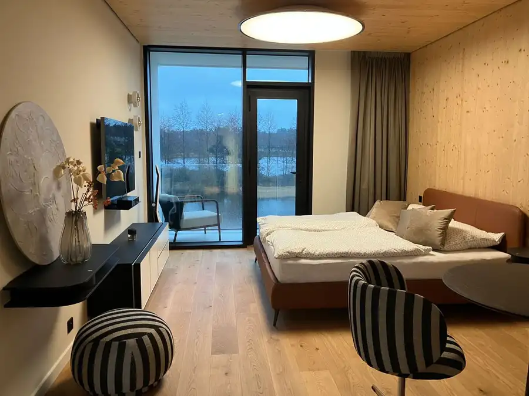
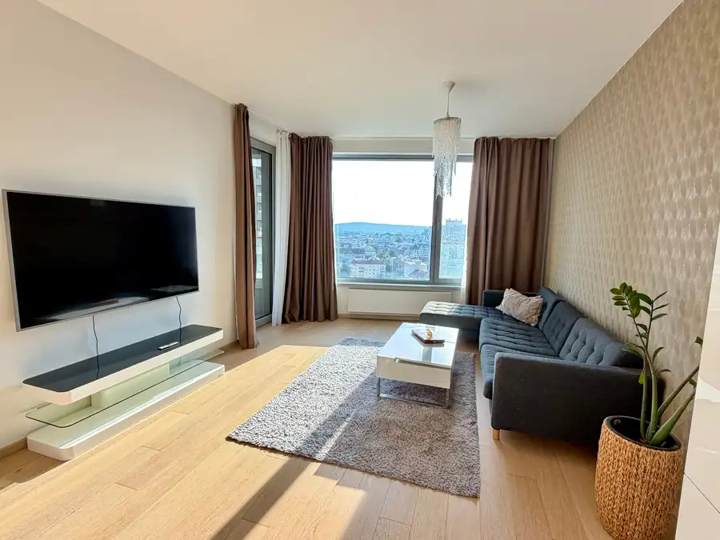
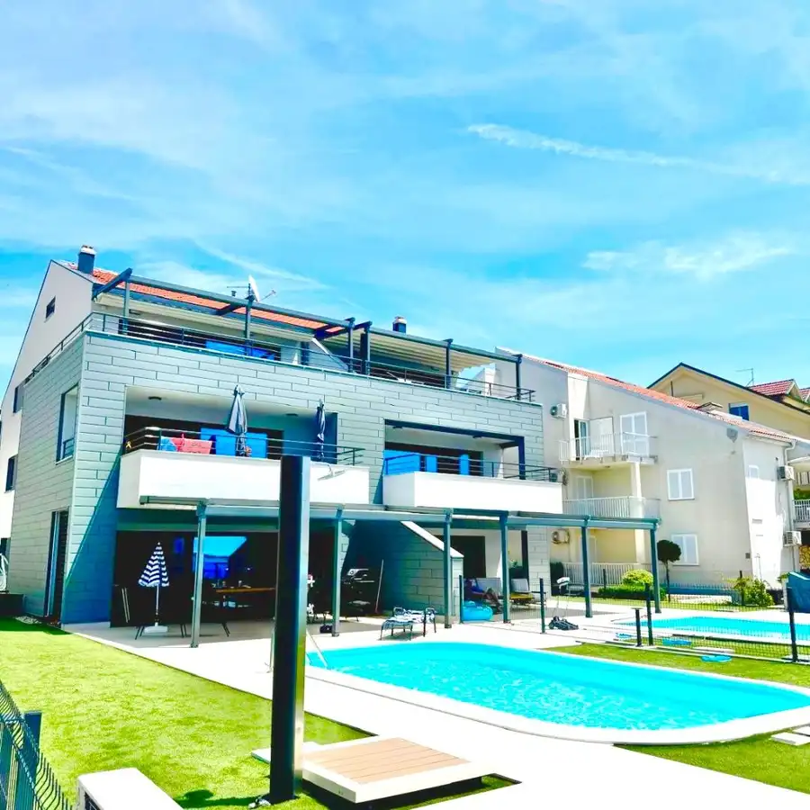

Veľký 3i byt blízko centra mesta v Ružinove s výhľadom na hrad !
Ružinov, Bratislava
- Dispozícia3-izbový
- Plocha110 m²
- Poschodie7. z 29
- StavNovostavba
- Energetická triedaA
O nehnuteľnosti
Nexus Reality Vám exkluzívne ponúka na predaj priestranný a dizajnovo zaujímavý 3-izbový byt v 20 ročnej novostavbe Glória na rodinné bývanie, alebo na investičné účely ihneď k nasťahovaniu, resp. na prenájom. Byt sa nachádza na 7. poschodí z 29, disponuje čistou plochou o výmere 110m2 a je orientovaný na juho-západ. Je krásne presvetlený a slnečný. Pozostáva z priestrannej chodby, veľkého a menšieho šatníka, samostatnej kúpeľne, samostatnej toalety, spojenej kuchyne s priestranou obývačkou s pracovným kútom, ako aj spálne a detskej izby. Disponuje loggiou s výhľadom na mesto o veľkosti 10m2, ktorá je prístupná zo všetkých izieb. K bytu prislúcha aj murovaná uzamykateľná pivničná kobka o veľkosti 8m2. K bytu je k dispozícii aj garážové státie v stráženom garážovom dome formou automatického výťahového zakladača áut.V bytovom dome je recepcia so strážnou službou dostupná 24/7. Je plne zariadený nábytkom na mieru, vybavený príslušenstvom vo všetkých izbách ako aj kuchyni.Nehnuteľnosť je situovaná v úplnej blízkosti centra Bratislavy, v mestskej časti Ružinov na Zahradníckej ulici. Do centra mesta sa dostanete chôdzou za 20 minút. V okolí sa nachádza známe trhovisko Miletičova, potraviny, množstvo gastro prevádzok, kostol, nemocnica s poliklinikou, materské škôlky a školy. V pešej dostupnosti je k dispozícii nákupne centrum Centrál. Na druhú stranu od domu je centrum športu a oddychu jazero Štrkovec s veľkým detskym ihriskom, minigolfom a bežeckou traťou, zimný štadión, parky so zeleňou.Zástavka MHD do centra, alebo iných častí Bratislavy je 2 minúty chôdzou a takisto je výborné napojenie na obchvat, ktorým je možné sa dostať von z Bratislavy na všetky smery ako aj na Letisko M.R. Štefánika.Výhody nehnuteľnosti:-Veľkorysosť priestoru s rozdelením na dennú a nočnú časť,-Orientácia,-Svetlosť,-Recepcia a strážna služba 24/7,-Pivničná kobka,-Garážové státie,-Výhľad.Výhody lokality:-Blízkosť centra mesta,-Výborná občianska vybavenosť (škôlky, školy, nemocnica s poliklinikou, potraviny, gastro prevádzky, MHD, parky, jazero, atď.)-Rýchle spojenie do centra mesta ako aj na obchvat a letisko,-Možnosti športového vyžitia (prechádzky, beh, cyklistika, zimný štadión),-Zelené parky v okolí a jazero Štrkovec.Cena: 439 000 € (byt 414 000 € + parkovacie miesto v zakladači v parkovacom dome 25 000 €).Ak Vás ponuka zaujala, radi Vás nehnuteľnosťou prevedieme a ukážeme. Kontaktujte prosím číslo: 0903 200 323, alebo napíšte na: zani@nexusreality.sk NEXUS RealityKarpatská 18Bratislava * zabezpečíme autorizovanú KZ* kompletný právny a advokátsky servis vrátane notárskej úschovy* odborné poradenstvo pri kúpe a predaji nehnuteľnosti* pomoc pri rekonštrukcii nehnuteľnosti* služby a starostlivosť o nehnuteľnosť pri prenájme
Parametre
| Bezpečnosť | Bezpečnostné dvere, Strážna služba, Kamerový systém |
|---|---|
| Cena vrátane energií | Nie |
| Doprava | Cyklistická infraštruktúra, Diaľnica, Letisko, Cesta, MHD |
| Druh | 3 izbový byt |
| Dátum zverejnenia | 28. 6. 2026 |
| Energetický certifikát budovy | A |
| Orientácia | Juhozápadná |
| Podlažie | 7 |
| Počet nadzemných podlaží | 29 |
| Počet spální | 1 |
| Rok výstavby | 2006 |
| Stav nehnuteľnosti | Novostavba |
| Typ | Predaj |
| Typ konštrukcie | Zmiešaná |
| Vybavenie | Sklad, Vyhradené parkovanie, Strážna služba, Detské ihrisko, Nabíjacia stanica elektromobilov, Recepcia |
| Vybavenie objektu | Nadštandardné |
| Zariadenie | Zariadené kompletne |
| Úžitková plocha | 110 m² |
Kde to je


Mohlo by Vás zaujímať

BytNové10 169 900 €Dizajnový apartmán pri jazere v Penati Golf Rezort v projekte LuxApartments, Šajdíkové Humence Šajdíkove Humence 1-izbový42.87 m²2. podlažie Nexus Reality Vám exkluzívne ponúka na predaj luxusne a dizajnovo na mieru architektom zariadený 1izbový byt v súkromnom rezorte Penati Golf…
BytNové10 1 100 €Najlepšia adresa v meste! Skypark, 2i.byt, krásny výhľad! Staré Mesto, Bratislava 2-izbový60 m²14. podlažie Nexus Reality ponúka NA PRENÁJOM 2 izbový byt na najvyhľadávanejšej adrese v hlavnom meste v novom Downtowne. Byt sa nachádza v SKYPARKU v III. veži…
DomNové10 Cena dohodouNehnuteľnosť v Chorvátsku, prvá rada pri mori! nový, 4.i kompletne zariadený apartmán! Možný odpočet DPH! Reality 124 m² Nexus Reality exkluzívne ponúka na predaj veľký 4i apartmán v Chorvátsku na ostrove Pag, v časti Povljana, na krásnej pláži s jemným pieskom. NÁŠ…